Voces de la Experiencia
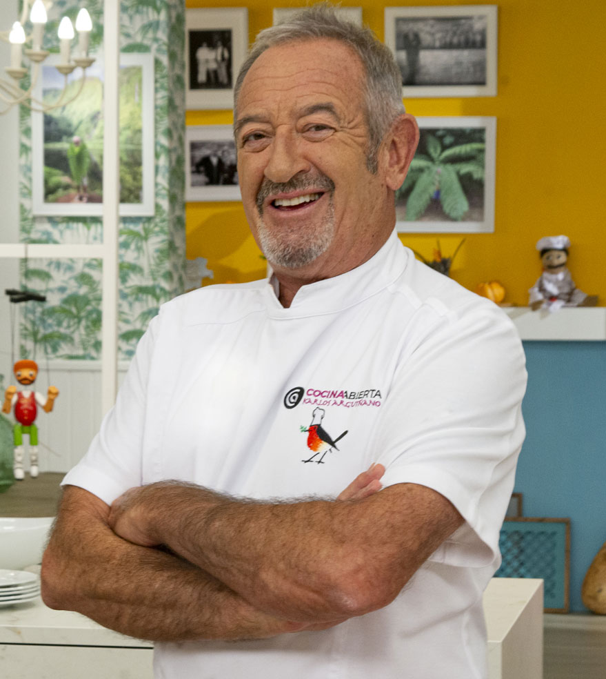
Karlos Arguiñano
"El secreto es el cariño y la paciencia con la harina. ¡Rico, rico y con fundamento!"
Visitar Web
Crujientes por fuera, cremosas por dentro. Descubre el legado cultural, la ciencia de la bechamel y los secretos mejor guardados de la tapa reina.
La evolución de un bocado real que se convirtió en el emblema indiscutible de nuestra gastronomía popular.
Aunque bautizada por Louis de Béchameil, fue la cocina francesa del siglo XVII la que refinó esta salsa, pilar fundamental de la cremosidad que hoy conocemos.
El chef Antonin Carême deslumbró en un banquete real con las "Croquettes à la Royale", estableciendo la técnica del rebozado crujiente (del francés 'croquer').
A finales del XIX, la receta cruza los Pirineos y se transforma. España aporta el uso ingenioso de sobras de cocido y jamón, creando una identidad propia.
La croqueta hoy es más que comida; es un recuerdo emocional. La receta familiar transmitida de generación en generación es el estándar de oro del sabor.
Las estadísticas confirman la hegemonía de los sabores clásicos frente a las nuevas tendencias gourmet, destacando la fuerte entrada del chorizo en el ranking.
Toda gran croqueta merece un compañero a su altura. Estas son nuestras recomendaciones estrella.
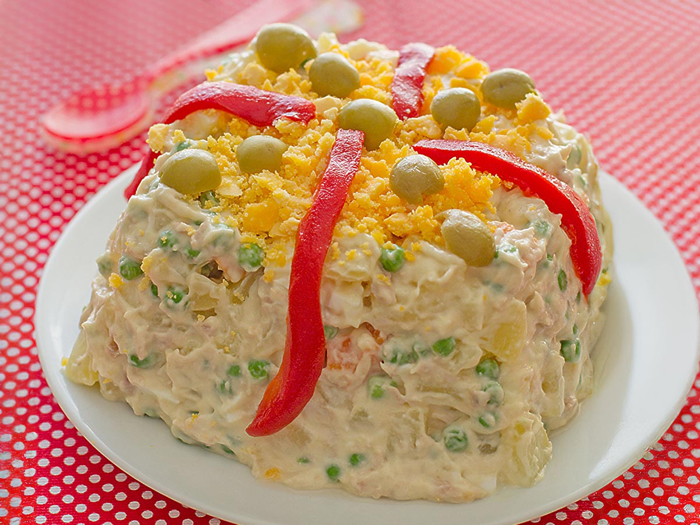
El contrapunto frío y cremoso ideal para una croqueta recién frita.
Ver Vídeo Receta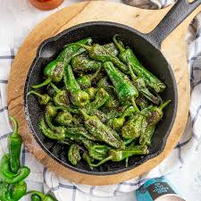
Un toque de sal gorda y ese picante aleatorio que tanto nos gusta.
Ver Vídeo Receta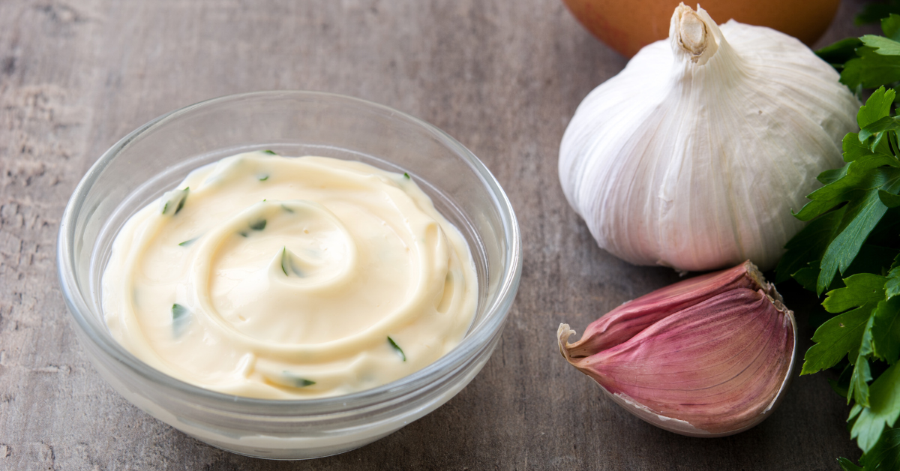
Para los amantes de las emociones fuertes y el sabor intenso a ajo.
Ver Vídeo Receta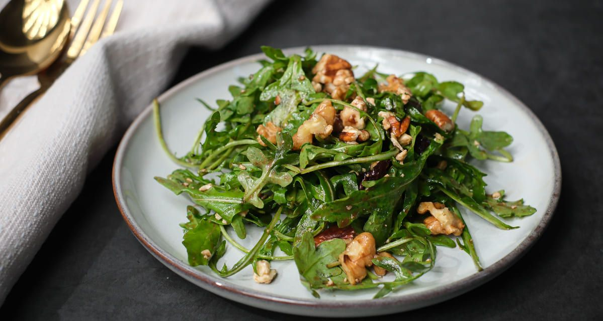
Aporta frescura y ligereza para limpiar el paladar entre bocado y bocado.
Ver Vídeo Receta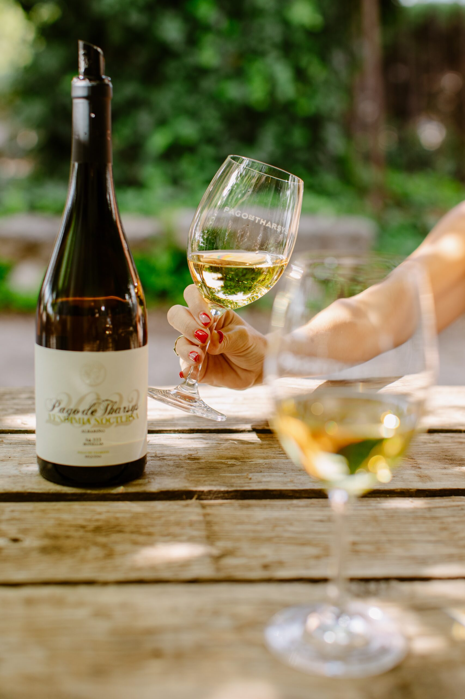
La acidez perfecta para equilibrar la suntuosidad de la bechamel.
Ver Vídeo Maridaje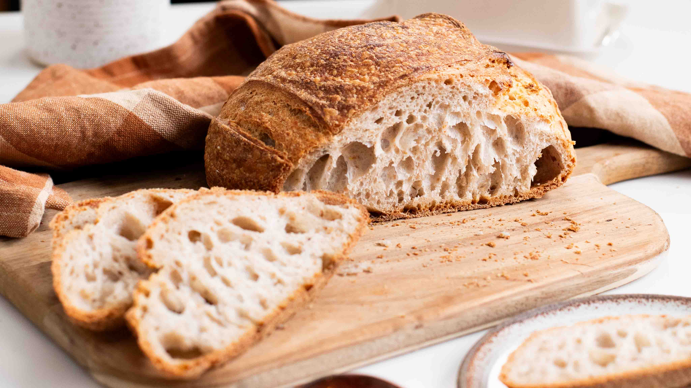
Dominar la croqueta requiere paciencia, mimo y respetar los cuatro pilares fundamentales de su elaboración.
Cocinar la harina en mantequilla a fuego suave es vital para quitar el sabor a crudo.
Añadir leche caliente poco a poco. Al menos 20 minutos de brazo para evitar grumos.
Mínimo 12 horas en la nevera, cubierta con film "a piel" para evitar costra.
Empanado sutil y a freír en abundante aceite de oliva muy caliente (180ºC).
Una selección imprescindible en la capital cántabra donde degustar este bocado es una auténtica experiencia culinaria.
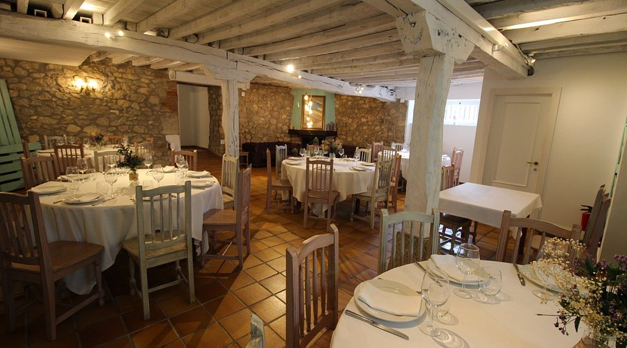
Un espacio acogedor y con encanto donde la tradición cántabra se eleva con toques modernos.
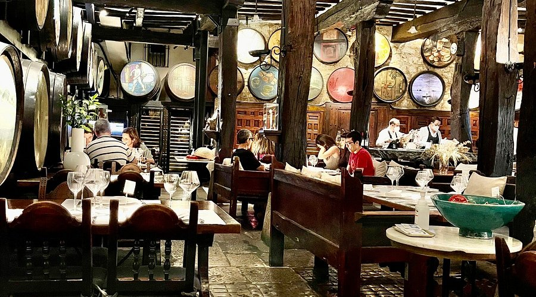
Historia viva de Santander. Arte en sus paredes y unas croquetas míticas.
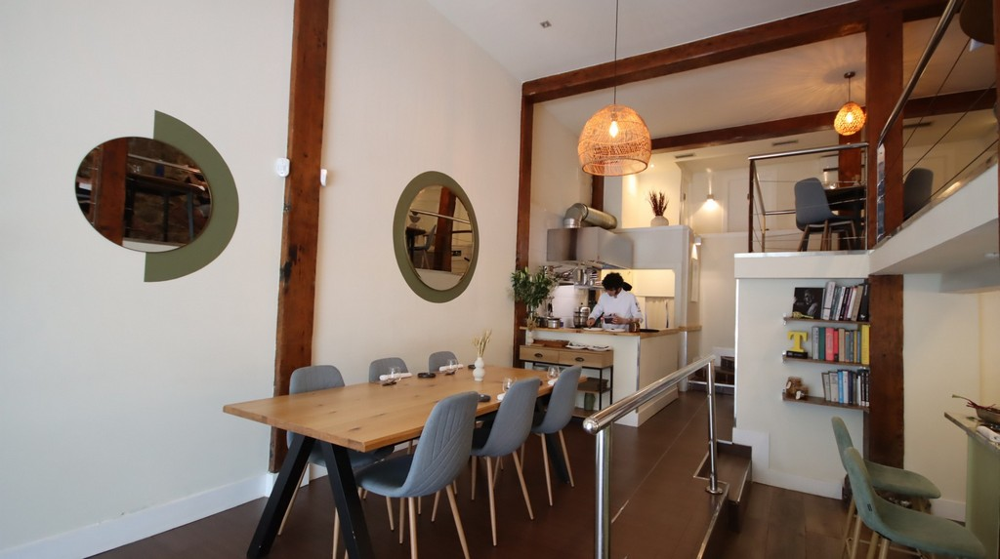
Cocina honesta, con sabor a hogar y un cuidado extremo en la bechamel.
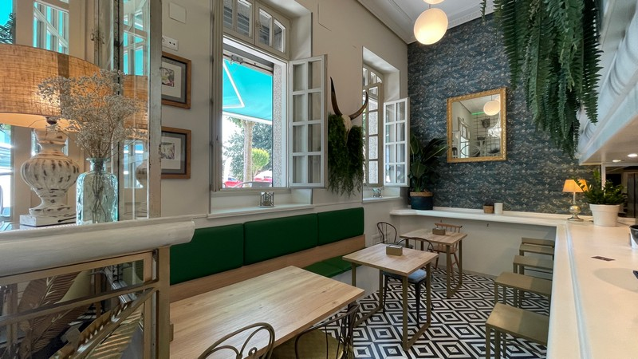
Un entorno idílico y sorprendente para disfrutar de una ración inolvidable.

"El secreto es el cariño y la paciencia con la harina. ¡Rico, rico y con fundamento!"
Visitar Web
Teléfono +34 942 33 44 55
Email sara.croqueta@universo.com
Dirección Paseo de Pereda, 12, Santander